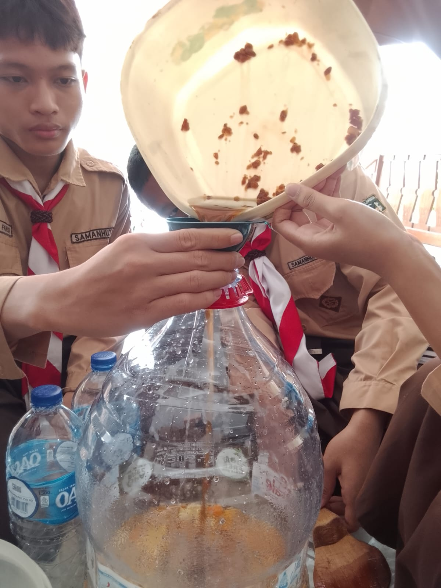
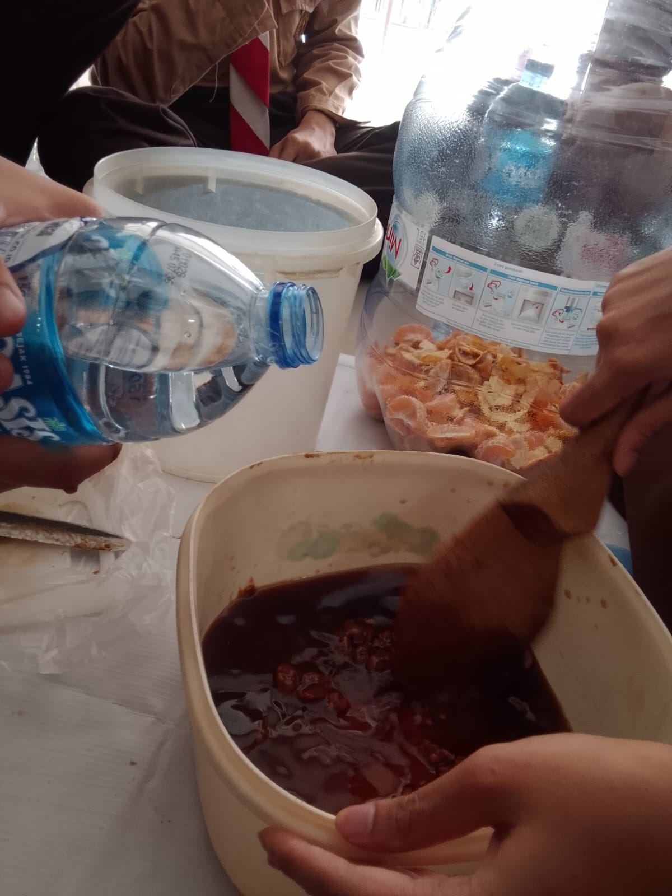
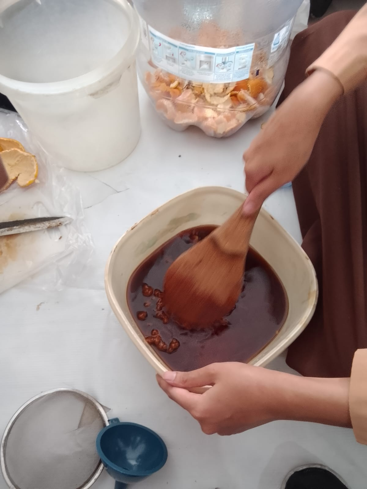
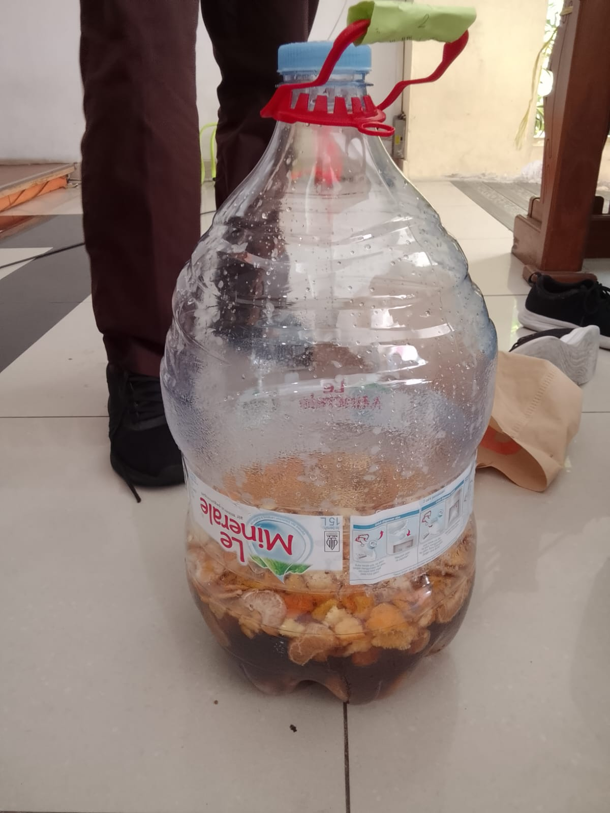
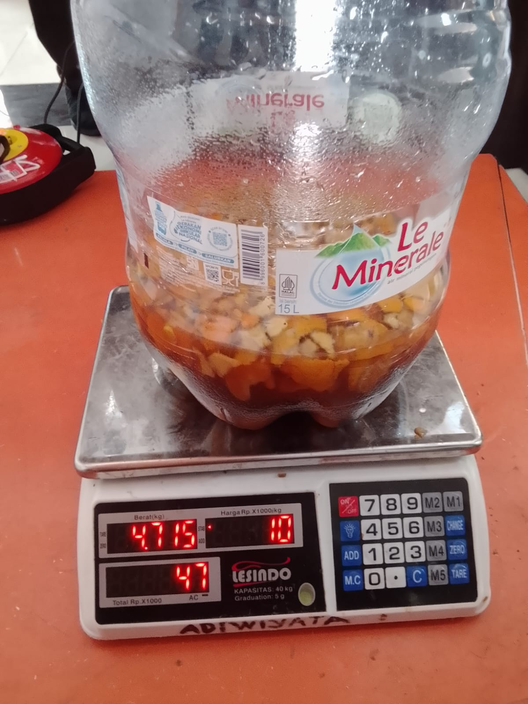

Mengubah sampah buah jadi ecoenzym
Tujuan
Praktikum ini dilakukan untuk mencoba sendiri bagaimana limbah organik dapur diolah menjadi larutan fermentasi, sekaligus mengamati perubahan yang terjadi dari hari ke hari. Dari kegiatan ini diharapkan kami bisa:
- menjelaskan alur pembuatan ecoenzym dengan bahasa sendiri,
- menghitung kebutuhan bahan dari jumlah sampah yang tersedia,
- mencatat dan menilai tanda fermentasi yang sehat maupun gagal.
Dasar teori
Ekoenzim adalah larutan yang muncul ketika mikroorganisme memecah gula dan bahan organik dalam wadah tertutup tanpa banyak oksigen. Sumber karbohidratnya berasal dari gula, sedangkan "bahan baku" sampahnya adalah kulit atau sisa buah dan sayur segar.
Takaran yang paling sering dipakai ialah 1 bagian gula : 3 bagian sisa organik : 10 bagian air (berdasarkan berat untuk gula dan sampah, volume untuk air). Pada praktikum ini takarannya dibulatkan menjadi 300 g gula : ±1 kg sisa buah : 3 L air. Selama proses berlangsung terbentuk gas, sehingga wadah tidak boleh diisi penuh.
Kalkulator takaran dari berat sampah buah
Persiapan alat & bahan
Alat
- Galon air mineral kosong beserta tutupnya
- Pisau
- Talenan
- Corong
- Saringan
- Pengaduk / spatula kayu
- Sepuluh botol kemasan kosong (200–300 ml)
- Wadah untuk mengaduk larutan gula dan EM4 (baskom / ember / dll.)
Bahan
- Gula merah 300 gram sampai 1/3 kg
- Buah dan/atau kulitnya ± 1 kg
- Air mineral kemasan 3 botol @ 1 liter
- EM4
Prosedur kerja
- Isi galon dengan airTuang 2,7 liter air ke dalam galon.
- Buat larutan gulaLarutkan gula merah dengan 300 ml air di baskom atau ember, aduk sampai rata.
- Campurkan larutan ke galonMasukkan larutan gula ke dalam galon menggunakan corong, lalu aduk lagi sampai rata.
- Potong buah dan kulitnyaPotong kecil-kecil.
Jauhkan tangan dari sisi tajam pisau. - Masukkan ke dalam galonUsahakan semua potongan terendam larutan.
- Tambahkan EM4Tuang EM4 ke dalam galon, lalu aduk lagi.
- Tutup dan simpanTutup galon dengan rapat, simpan di tempat teduh dan tidak terkena sinar matahari langsung.
- Beri label tanggalTulis tanggal pembuatan pada galon.
- Buang gas fermentasiSetiap minggu, buka lalu tutup kembali galon untuk membuang gas fermentasi.
Agar galon tidak meledak, jangan lupa lakukan tiap minggu. - PanenSaat masa panen, saring cairan lalu masukkan ke dalam botol kemasan.
Dokumentasi foto

foto/1.jpeg
foto/2.jpeg
foto/3.jpeg
foto/4.jpeg
foto/5.jpegMenilai hasil
- Cairan berwarna kecokelatan
- Aroma asam bercampur manis
- Lapisan putih tipis di permukaan
- Bau busuk yang tajam
- Muncul belatung atau jamur gelap
- Wadah menggembung karena tekanan tidak dilepas
Pemanfaatan hasil
Setelah masa fermentasi selesai, cairan disaring lalu diencerkan sebelum dipakai: untuk membersihkan permukaan, menyiram tanaman, atau menetralkan bau sampah. Ampasnya bisa dikembalikan ke tanah atau dicampur kompos.
Cairan ini bukan minuman dan tidak boleh dikonsumsi.
Kesimpulan
Melalui proyek ini, Kelompok 2 mempelajari cara mengolah sampah organik, mengenal fermentasi, dan membangun kebiasaan yang lebih peduli terhadap lingkungan.